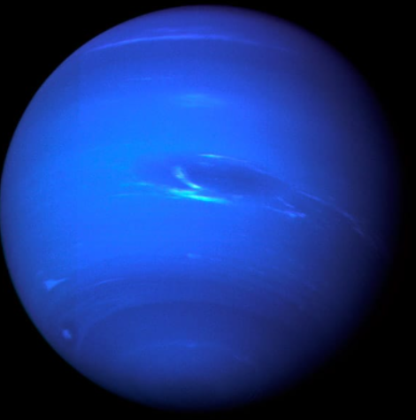

Neptuno
Neptuno es el más alejado del Sol y esto lo convierte en elplaneta más frio del Sistema Solar. También, por el gas existente en su atmósfera, se ve de color azul. Posee un sistema de cuatro anillos formados por particulas de polvo.
Su nombre es en honor a Neptuno, dios romano de las aguas.
